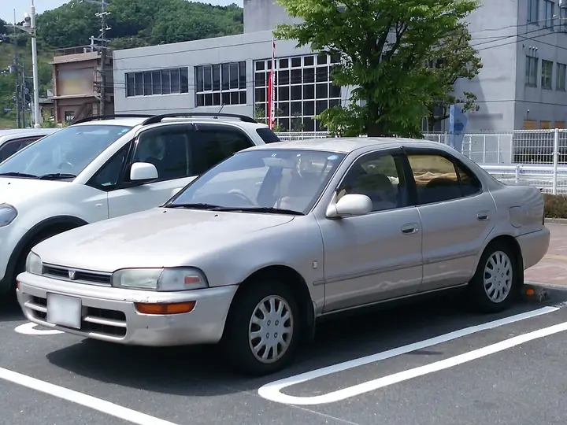
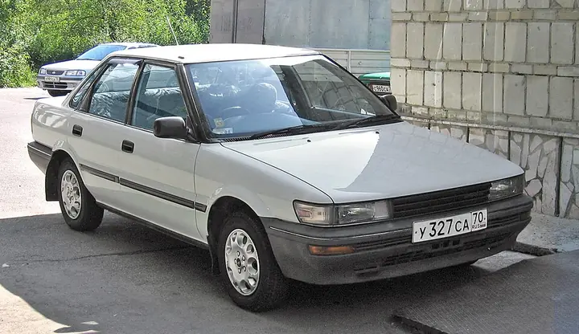
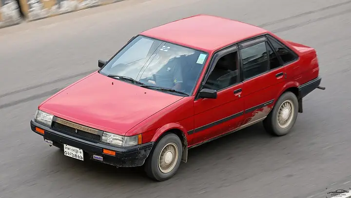
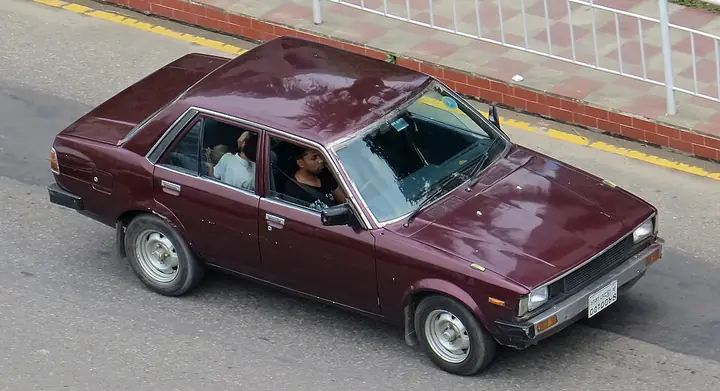
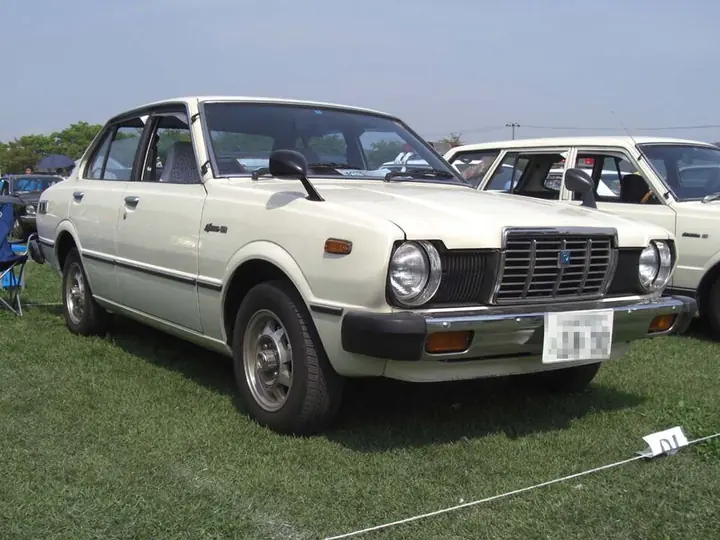
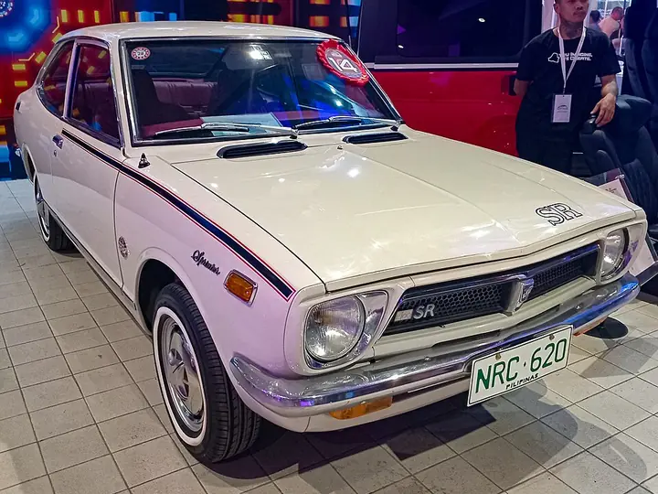

Toyota Sprinter
Seventh generation (E100; 1991) · 1991–2002
Abstract
This generation of the Toyota Sprinter was built 1991–1995 (until 2002 for commercial wagons) in Japan: Takaoka Plant, Toyota City, Japan: Higashi-Fuji plant, Susono, Shizuoka (Kanto Auto Works), Japan: Ōbu, Aichi (Toyota Industries). Body styles: 4-door sedan, 5-door wagon/van. Layout: Front engine, front-wheel drive.


1Specifications
| Production | 1991–1995 (until 2002 for commercial wagons) |
|---|---|
| Assembly | Japan: Takaoka Plant, Toyota CityJapan: Higashi-Fuji plant, Susono, Shizuoka (Kanto Auto Works)Japan: Ōbu, Aichi (Toyota Industries) |
| Body style | 4-door sedan5-door wagon/van |
| Layout | Front engine, front-wheel driveFront engine, all-wheel drive (AE104/AE109V/CE104/CE105V/CE109V) |
| Engine | Petrol:1.3 L 4E-FE I4 (EE101/102V)1.3 L 2E I4 (EE106V)1.5 L 3E I4 (EE107V/108G)1.5 L 5E-FE I4 (EE103V/104G)1.5 L 5A-FE I4 (AE100)1.6 L 4A-FE I4 (AE101/104/109V)1.6 L 4A-GE 20-valve I4 (AE101)Diesel:2.0 L 2C-III I4 (CE100/104/106V/108G/109V)2.2 L 3C-E I4 (CE102G/105V/107V) |
| Transmission | 3-speed A131L/A132L automatic4-speed A240E/A240L/A241H/A241L/A245E automatic4-speed C40 manual5-speed C50/C56/E55F5/E59F/S50/S51 manual |
| Wheelbase | 2465 mm |
| Length | 4260 mm (wagon)4290 mm (sedan) |
| Width | 1685 mm |
| Height | 1370-1390 mm (sedan)1435-1455 mm (wagon) |
| Weight | 940-1190 kg |
| Also called | Geo Prizm (E100) |
| Related | Toyota Corolla (E100)Toyota Sprinter Trueno/Corolla Levin (AE100/101)Toyota Sprinter Marino/Corolla CeresHolden Nova (LG) |
2Previous generations



_(cropped).jpg){kind=link}

_(cropped).jpg){kind=link}





3Generation by generation
Length +11% from the first to the last
E10 19683,845 mm
E20 19703,945 mm
E40 19743,995 mm
E70 19794,050 mm
E80 19834,155 mm
E90 19874,205 mm
E100 19914,260 mm
Weight +33% from the first to the last
E10 1968705 kg
E20 1970755 kg
E40 1974895 kg
E70 1979805 kg
E80 1983820 kg
E90 1987880 kg
E100 1991940 kg